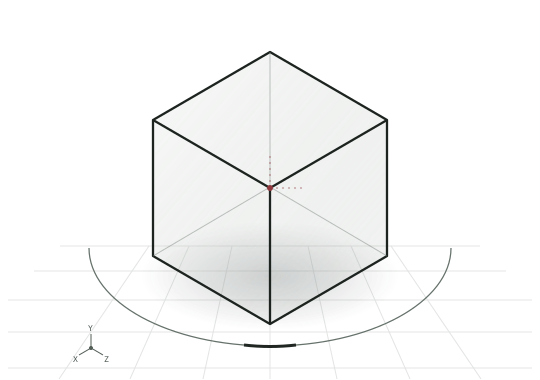
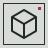

- 01 사이트 로그인
- 02 카카오 기기 인증
- 03 운영 콘솔

X · Y · Z ◈ CONTROL MODELLAYER 01 / WORKSPACE
remote.
카카오톡 봇 운영 콘솔에 접속합니다. 보안 연결에서 사이트 로그인과 카카오 기기 인증을 진행하세요.
사이트 로그인
운영 콘솔 주소를 확인하는 중입니다.

remote. CONTROL SURFACE / 01 PRIVATE WORKSPACE
X · Y · Z ◈ CONTROL MODELLAYER 01 / WORKSPACE
카카오톡 봇 운영 콘솔에 접속합니다. 보안 연결에서 사이트 로그인과 카카오 기기 인증을 진행하세요.
운영 콘솔 주소를 확인하는 중입니다.